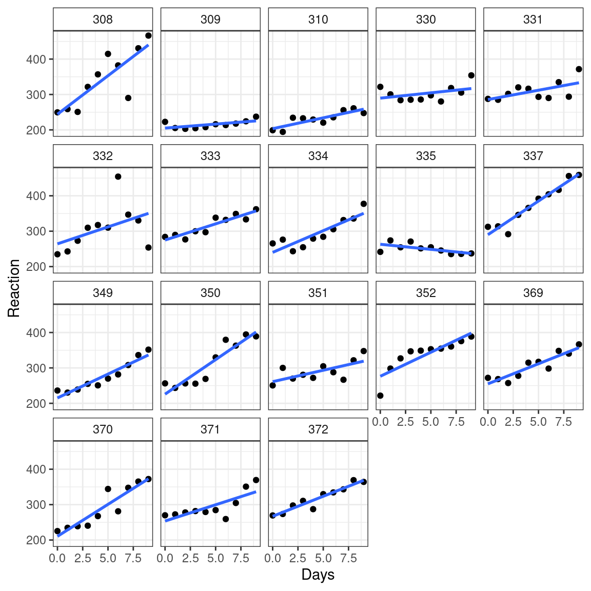

Formulas
David Gerard
2022-02-14
Learning Objectives
- Overview of Formulas
{lme4}Vignette
Motivation
A
formulais a basic data structure in R.Whenever you have used a tilde (
~), you have used aformula.formulas are used int.test(),lm(),glm(),lme4::lmer(),lme4::nlmer(),facet_grid(),facet_wrap(),purrr::map()and relatives,reshape2::acast(),aggregate(), etc…We will learn about
- The structure of a
formula - The syntax for
formulas. - Functions to work with
formulas
- The structure of a
Formula Creation
Formulas are data structures that consist of
- A left-hand side (LHS)
call - A right-hand side (RHS)
call - An environment.
- A left-hand side (LHS)
So they are two calls with an environment attached (like a quosure).
- Formally, they are expression vectors of length 3, where the first element is the function call
~, the second element is the LHS, and the third element is the RHS.
- Formally, they are expression vectors of length 3, where the first element is the function call
You commonly create a formula with a tilde
~.f1 <- y ~ x + z class(f1)## [1] "formula"typeof(f1) ## built on calls## [1] "language"attributes(f1)## $class ## [1] "formula" ## ## $.Environment ## <environment: R_GlobalEnv>length(f1)## [1] 3f1[[1]]## `~`f1[[2]]## yf1[[3]]## x + zTest if an object is a formula with
rlang::is_formula().rlang::is_formula(f1)## [1] TRUEThe
~uses the call environment as the formula environment. You can specify other environments usingrlang::new_formula().e <- rlang::env() rlang::new_formula(lhs = rlang::expr(y), rhs = rlang::expr(x), env = e)## y ~ x ## <environment: 0x55570c0afcd8>You can have one-sided formulas with only a RHS, in which case they have length 2.
f2 <- ~ x + y f2## ~x + ylength(f2)## [1] 2
Formula Syntax
In modeling contexts, the LHS contains the name of the response variable.
The RHS contains the predictor variables that are linearly related the response (up to some link function).
Terms separated by a
+indicate main effects.mpg ~ wt + drat + hp## mpg ~ wt + drat + hp\[ \text{mpg} = \beta_0 + \beta_1\text{wt} + \beta_2\text{drat} + \beta_3 \text{hp} \]
Terms separated by a
:indicate interaction effects.mpg ~ wt:drat + hp## mpg ~ wt:drat + hp\[ \text{mpg} = \beta_0 + \beta_{12}\text{wt}\times\text{drat} + \beta_3 \text{hp} \]
Terms separated by a
*indicate interaction and main effects.mpg ~ wt * drat + hp## mpg ~ wt * drat + hp\[ \text{mpg} = \beta_0 + \beta_1\text{wt} + \beta_2\text{drat} + \beta_{12}\text{wt}\times\text{drat} + \beta_3 \text{hp} \]
Note that
a*adoes not give you a quadratic term ina.lm(mpg ~ wt * wt, data = mtcars)## ## Call: ## lm(formula = mpg ~ wt * wt, data = mtcars) ## ## Coefficients: ## (Intercept) wt ## 37.29 -5.34The
^indicates crossing to a provided degree.mpg ~ (wt + drat + hp)^2## mpg ~ (wt + drat + hp)^2is the same as
mpg ~ (wt + drat + hp) * (wt + drat + hp)## mpg ~ (wt + drat + hp) * (wt + drat + hp)which is the same as
mpg ~ wt + drat + hp + wt:drat + wt:hp + drat:hp## mpg ~ wt + drat + hp + wt:drat + wt:hp + drat:hpThe
-operator removes terms.mpg ~ wt*drat + hp - wt## mpg ~ wt * drat + hp - wtis the same as
mpg ~ drat + wt:drat + hp## mpg ~ drat + wt:drat + hpThe
1is an implicit variable for the \(y\)-intercept. You can remove it via subtractionmpg ~ mpg + drat + hp - 1## mpg ~ mpg + drat + hp - 1\[ \text{mpg} = \beta_1\text{wt} + \beta_2\text{drat} + \beta_3 \text{hp} \]
{lme4}
Mixed models allow for model parameters to be treated as random variables (e.g. random slopes or intercepts).
You do this to control for correlation between samples. E.g.
- Many observations collected on the same individuals.
- Observations are a part of a hierarchy. E.g. data collected on students who belong to schools who belong to districts.
Lots of folks prefer treating effects as random (as opposed to fixed) when they are interested as the population as a whole more than specific values of a covariate.
E.g. in a study on sleep deprivation, Researchers measured reaction times \(y\) for individuals \(z\) after so many days of sleep deprivation \(x\).
library(ggplot2) data("sleepstudy", package = "lme4") ggplot(sleepstudy, aes(x = Days, y = Reaction)) + facet_wrap(. ~ Subject) + geom_point() + geom_smooth(method = "lm", se = FALSE)
Each subject has different slopes and intercepts.
We don’t care about the slopes and intercepts for each subject, but we want to account for correlation within subjects.
So we might consider the slope and intercept of each subject to be random.
Folks don’t just include fixed effects for subject because it would use a lot more degrees of freedom (this is a cynical view).
To specify just random intercepts (different for each subject), do
lm1 <- lme4::lmer(Reaction ~ Days + (1 | Subject), data = sleepstudy)To specify random slopes (different slope on
Dayfor each subject), dolm2 <- lme4::lmer(Reaction ~ Days + (Days | Subject), data = sleepstudy)Let
- \(y_i\) be the reaction time for observation \(i\).
- \(x_i\) be the day for observation \(i\).
- \(z_{ij}\) be an indicator for subject \(j\).
Then
lm1fit the model \[ y_i = \beta_0 + \beta_1x_i + \sum_{j=1}^{18}\alpha_{0j}z_{ij} + \epsilon_i\\ \alpha_{0j} \overset{iid}{\sim} N(0, \sigma^2)\\ \epsilon_i \overset{iid}{\sim} N(0, \tau^2) \]lm2fit the model \[ y_i = \beta_0 + \beta_1x_i + \sum_{j=1}^{18}\alpha_{0j}z_{ij} + \sum_{j=1}^{18}\alpha_{1j}x_iz_{ij} + \epsilon_i\\ (\alpha_{0j},\alpha_{1j}) \overset{iid}{\sim} N_{2}(0, \Sigma)\\ \epsilon_i \overset{iid}{\sim} N(0, \tau^2) \]The idea is that we specify the random effects with the parentheses. The left of the
|is the explanatory variable to model a relationship with the response, to the right of the pipe is the grouping factor that is assumed to be random.E.g., in
lm1the the \(y\)-intercept was different for each subject.E.g., in
lm2the the slope of Day and \(y\)-intercept was different for each subject.Here are the common formulations (Table 2 from
{lme4}vignette):Formula Meaning y ~ (1 | g)Random intercept with fixed mean. y ~ (1 | g1/g2)ory ~ (1 | g1) + (1 | g1:g2)Intercept varying among g1andg2withing1.y ~ (1 | g1) + (1 | g2)Intercept varying among g1 and g2. y ~ x + (x | g)Correlated random intercept and slope yis the response,xis the explanatory, andgg1g1are grouping variables.
Working with Formulas
all.vars()will return a character vector of variable names used in the formulaf <- mpg ~ wt:drat + hp all.vars(f)## [1] "mpg" "wt" "drat" "hp"Add variables to a formula with
update.formula(). You use a.to represent everything on LHS or RHS.f <- y ~ x f <- update.formula(old = f, new = ~ . + z) f## y ~ x + zmodel.frame()will take as input a formula and a data frame and will create a new data frame containing all of the variables involved in the formula. If the variables are not in the data frame, R will look for them in the formula environment.f <- mpg ~ wt:drat + hp mfout <- model.frame(formula = f, data = mtcars) head(mfout)## mpg wt drat hp ## Mazda RX4 21.0 2.620 3.90 110 ## Mazda RX4 Wag 21.0 2.875 3.90 110 ## Datsun 710 22.8 2.320 3.85 93 ## Hornet 4 Drive 21.4 3.215 3.08 110 ## Hornet Sportabout 18.7 3.440 3.15 175 ## Valiant 18.1 3.460 2.76 105attributes(mfout)## $names ## [1] "mpg" "wt" "drat" "hp" ## ## $terms ## mpg ~ wt:drat + hp ## attr(,"variables") ## list(mpg, wt, drat, hp) ## attr(,"factors") ## hp wt:drat ## mpg 0 0 ## wt 0 2 ## drat 0 2 ## hp 1 0 ## attr(,"term.labels") ## [1] "hp" "wt:drat" ## attr(,"order") ## [1] 1 2 ## attr(,"intercept") ## [1] 1 ## attr(,"response") ## [1] 1 ## attr(,".Environment") ## <environment: R_GlobalEnv> ## attr(,"predvars") ## list(mpg, wt, drat, hp) ## attr(,"dataClasses") ## mpg wt drat hp ## "numeric" "numeric" "numeric" "numeric" ## ## $row.names ## [1] "Mazda RX4" "Mazda RX4 Wag" "Datsun 710" ## [4] "Hornet 4 Drive" "Hornet Sportabout" "Valiant" ## [7] "Duster 360" "Merc 240D" "Merc 230" ## [10] "Merc 280" "Merc 280C" "Merc 450SE" ## [13] "Merc 450SL" "Merc 450SLC" "Cadillac Fleetwood" ## [16] "Lincoln Continental" "Chrysler Imperial" "Fiat 128" ## [19] "Honda Civic" "Toyota Corolla" "Toyota Corona" ## [22] "Dodge Challenger" "AMC Javelin" "Camaro Z28" ## [25] "Pontiac Firebird" "Fiat X1-9" "Porsche 914-2" ## [28] "Lotus Europa" "Ford Pantera L" "Ferrari Dino" ## [31] "Maserati Bora" "Volvo 142E" ## ## $class ## [1] "data.frame"The order of the variables are:
- The response variable is the first column
- All of the predictor variables are in subsequent columns.
The resulting data frame has a
termsattribute, which you can extract viaterms().terms(mfout)## mpg ~ wt:drat + hp ## attr(,"variables") ## list(mpg, wt, drat, hp) ## attr(,"factors") ## hp wt:drat ## mpg 0 0 ## wt 0 2 ## drat 0 2 ## hp 1 0 ## attr(,"term.labels") ## [1] "hp" "wt:drat" ## attr(,"order") ## [1] 1 2 ## attr(,"intercept") ## [1] 1 ## attr(,"response") ## [1] 1 ## attr(,".Environment") ## <environment: R_GlobalEnv> ## attr(,"predvars") ## list(mpg, wt, drat, hp) ## attr(,"dataClasses") ## mpg wt drat hp ## "numeric" "numeric" "numeric" "numeric"The
termsobject is the supplied formula with attributes that can be used to make the model matrix.The
termsobject can be read about via?terms.objectYou can do manipulations on
termsobjects withdelete.response(),drop.terms(), andreformulate().model.matrix()is can be used to create the predictor variable matrix (the \(X\) matrix from regression).X <- model.matrix(object = f, data = mtcars) head(X)## (Intercept) hp wt:drat ## Mazda RX4 1 110 10.218 ## Mazda RX4 Wag 1 110 11.213 ## Datsun 710 1 93 8.932 ## Hornet 4 Drive 1 110 9.902 ## Hornet Sportabout 1 175 10.836 ## Valiant 1 105 9.550You either provide it a data frame to look for variables, or it looks for variables in the formula environment.
model.matrix()basically evaluates interactions, and includes the intercept.model.matrix()can also be used on the output ofmodel.frame(). Just make sure to include thedataargument.X <- model.matrix(object = mfout, data = mtcars) head(X)## (Intercept) hp wt:drat ## Mazda RX4 1 110 10.218 ## Mazda RX4 Wag 1 110 11.213 ## Datsun 710 1 93 8.932 ## Hornet 4 Drive 1 110 9.902 ## Hornet Sportabout 1 175 10.836 ## Valiant 1 105 9.550Use
model.response()on the output ofmodel.frame()to get the response vector matrix.y <- model.response(mfout) head(y)## Mazda RX4 Mazda RX4 Wag Datsun 710 Hornet 4 Drive ## 21.0 21.0 22.8 21.4 ## Hornet Sportabout Valiant ## 18.7 18.1
Using formulas in a function
- Include
formulaanddataarguments. - Use
model.frame() - Extract the response vector (
model.response()) and design matrix (model.matrix()) from the model frame. - Do what you want with those entities.
Example:
f <- function(formula, data) { stopifnot(rlang::is_formula(formula)) mf <- model.frame(formula = formula, data = data) y <- model.response(mf) X <- model.matrix(object = mf, data = data) ## Continue with your method ... }Sometimes you want to treat the different explanatory variables differently. One way would be to (i) separate them by the pipe
|, (ii) convert to a string, (iii) do string manipulation, (iv) then useas.formula()to coerce back to a formula.f <- mpg ~ wt + drat | am + hp chvec <- as.character(f) xvec <- strsplit(chvec[[3]], "\\|")[[1]] f1 <- as.formula(paste0(chvec[[2]], "~", xvec[[1]], "-1")) f2 <- as.formula(paste0(chvec[[2]], "~", xvec[[2]], "-1")) X1 <- model.matrix(object = f1, data = mtcars, intercept = FALSE) X2 <- model.matrix(object = f2, data = mtcars) f1## mpg ~ wt + drat - 1f2## mpg ~ am + hp - 1head(X1)## wt drat ## Mazda RX4 2.620 3.90 ## Mazda RX4 Wag 2.875 3.90 ## Datsun 710 2.320 3.85 ## Hornet 4 Drive 3.215 3.08 ## Hornet Sportabout 3.440 3.15 ## Valiant 3.460 2.76head(X2)## am hp ## Mazda RX4 1 110 ## Mazda RX4 Wag 1 110 ## Datsun 710 1 93 ## Hornet 4 Drive 0 110 ## Hornet Sportabout 0 175 ## Valiant 0 105
New Functions
~Create a formula using call environment.rlang::new_formula(): Create a formula using any other environment.rlang::is_formula(): Predicate for formula.terms.formula(): Extract terms from a formula.update.formula(): Add variables to a formula.all.vars(): Get variable names used in a formula.model.matrix(): Get design matrix.model.frame(): Get matrix of variables used in model.model.response(): Get the response matrix from the output ofmodel.frame().as.formula(): Coerce to a formula.

This work is licensed under a Creative Commons Attribution-NonCommercial 4.0 International License.